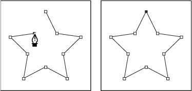

Draw straight line segments with the Pen tool
The simplest path you can draw with the Pen tool is a straight line, made by clicking the Pen tool to create two anchor points. By continuing to click, you create a path made of straight line segments connected by corner points.

Clicking Pen tool creates straight segments.